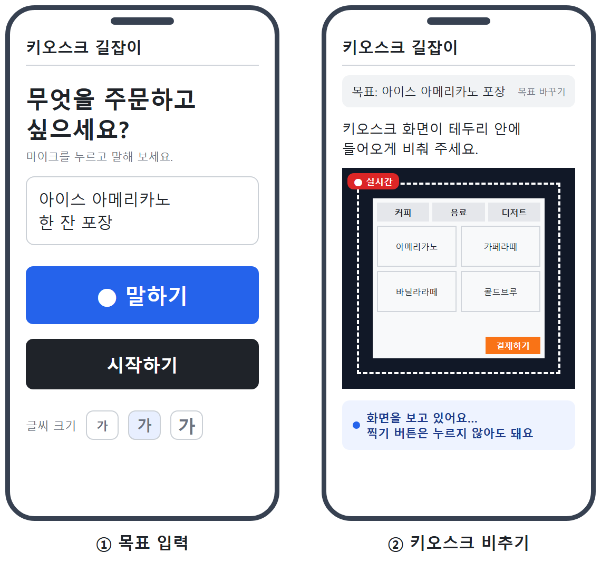
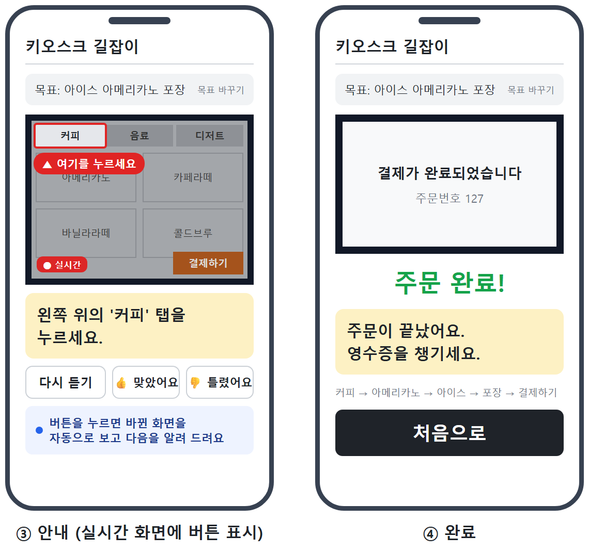

인공지능서비스개발II · Sprint 2 MVP 중간발표
어떤 키오스크든 휴대폰 카메라로 비추면,
AI가 눌러야 할 버튼을 짚어 주고 음성으로 안내합니다
8조 KIOSSON · 정윤서 · 이동건 · 2026. 11. 18.
커피
음료
디저트
▲ 여기를 누르세요
아메리카노
카페라떼
바닐라라떼
콜드브루
왼쪽 위의 ‘커피’ 탭을 누르세요.
01 문제 정의
키오스크 보급
2.4배
2019년 19.0만 대 → 2022년 45.5만 대, 요식업은 17배
고령층 이용 경험
19.1%
65~74세는 50.4%, 55세 이상의 59.6%가 이용 중 어려움을 겪음
장애인 이용자 불편
26.1%
가장 큰 불편은 “뒷사람 눈치가 보임” 54.0%
매장마다 화면 구성이 다르고 단계가 많아, 주문을 포기하거나 남에게 도움을 청하게 됩니다. 한국은 2024년 12월 초고령사회(65세 이상 20%)에 들어섰습니다.
출처: 과학기술정보통신부 · 서울디지털재단 「2023 서울시민 디지털역량실태조사」 · 보건복지부 「2024 장애인차별금지법 이행 실태조사」
01 문제 정의
| 기존 해결책 | 한계 |
|---|---|
| 배리어프리 키오스크 | 2026년 1월 의무화됐지만 기기를 바꿔야 해서 보급이 더딤 (서울 552대 · 경기 227대) |
| 교육·연습 앱 | 가상 화면으로 연습하므로 실제 매장의 다른 화면에는 그대로 통하지 않음 |
| 직원 도움 | 무인 매장이나 바쁜 시간에는 받기 어려움 |
| 카메라 AI 서비스 (Be My AI, ChatGPT 실시간 카메라) | 화면을 설명할 뿐, 주문 목표와 진행 단계를 기억하지 않고 버튼 위치를 짚어 주지 않음 |
우리의 접근
✓
앱 설치 없이 링크로 여는 모바일 웹
✓
처음 보는 키오스크 화면도 AI가 읽고 판단
✓
주문 목표를 기억하고 다음 버튼을 하나씩 안내
02 시스템 구성
사용자 휴대폰
모바일 웹 (Next.js)
목표 입력 (음성·글자)
실시간 카메라
화면 변화 감지
버튼 상자 · 음성 안내
장면 + 목표
→
←
안내문 + 좌표
웹 서버 (Vercel)
Next.js Route Handler
/api/guide · /api/menu
프롬프트 생성
응답 형식·좌표 검증
목업 모드 전환
장면 + 프롬프트
→
←
안내 JSON
AI 추론 서버 (GPU PC)
Ollama
Qwen2.5-VL
1단계 판단 → 2단계 위치
Cloudflare Tunnel 공개
웹 ↔ AI 접점은 요청·응답 형식 하나 (lib/guide.ts). 형식을 먼저 정하고 각자 브랜치에서 개발, AI 연결 전에는 목업 모드로 화면을 확인
↓
DB (Neon Postgres)
피드백 저장 · 사진은 저장 안 함
↑
학습 환경
LoRA 가중치 (QLoRA)
02 시스템 구성
1
화면 변화 감지
휴대폰 · 가벼운 연산
0.5초마다 화면을 32×18 흑백으로 줄여 비교. 휴대폰이 멈춰 있고 마지막으로 분석한 장면과 달라졌을 때만 보냄
2
장면 한 장 전송
휴대폰 → 웹 서버
영상이 아니라 JPEG 한 장. 28의 배수·약 98만 픽셀로 맞춰 보내 Ollama 내부 크기 변환 때문에 좌표가 밀리던 문제를 해결
3
1단계 · 판단
Qwen2.5-VL
목표 + 누른 버튼 기록 + 장면 → 화면 단계, 누를 버튼 순서(최대 3개), 안내문, 확신도, 완료 여부를 JSON으로
4
2단계 · 위치 찾기
Qwen2.5-VL
Qwen이 학습한 bbox_2d 형식으로 버튼 좌표만 따로 물음. 한 번에 받으면 상자가 작고 엉뚱하게 나와서 나눔
5
표시 · 음성 안내
휴대폰
AI가 본 그 사진 위에 1·2·3 번호 상자를 그리고 안내문을 읽어 줌. 형식·좌표가 틀리면 상자 없이 다음 장면을 다시 분석
03 현재 진행 상황
완료
진행 중
03 현재 진행 상황


[기획 단계 와이어프레임 · 실제 앱 화면 캡처로 바꿀 것]
03 현재 진행 상황 · 데모
커피 → 아메리카노 → 아이스 → 포장 → 결제하기까지
버튼 표시와 음성 안내가 이어지는지 보여 드립니다
[데모 방식 고르기: 배포 주소 + 실제 모델 / 목업 모드 / 녹화 영상] · 대체용 녹화 영상은 따로 준비
03 현재 진행 상황 · 1차 측정
버튼 안내 정확도
73.5%
36/49 · 목표 70% 이상
목표 달성
위치 정확도
57.1%
28/49 · 목표 60% 이상
2.9%p 부족
응답 시간
약 3초
평균 · 목표 5초 이내
목표 달성
49문항 · Qwen2.5-VL 7B · 프롬프트만(학습 없음). 한 종류 키오스크에서 어려운 화면을 일부러 많이 넣어 직접 라벨링 → 실제보다 낮게 나올 수 있음
이름·위치가 둘 다 맞은 것은 53~55%뿐. 확신도 high인데 틀린 답이 15개라 확신도만으로는 틀린 안내를 거르기 어려움
04 모델 선정
1
화면 사진을 이해해야 함
텍스트 전용 LLM은 사진을 보지 못함 → 처음 보는 키오스크 화면을 읽으려면 비전-언어 모델(VLM)이 필요
2
버튼 위치를 좌표로 내야 함
Qwen2.5-VL은 이미지 속 요소의 위치를 JSON 좌표(bbox_2d)로 내도록 학습됨, 화면 조작 에이전트 기능도 있음
3
비용·개인정보
공개 모델(3B·7B·72B)이라 Ollama로 직접 실행 → 호출당 과금 없음, 카메라 사진이 팀 PC 밖으로 나가지 않음
4
직접 개선할 수 있어야 함
가중치가 공개돼 있어 직접 모은 키오스크 데이터로 LoRA 파인튜닝을 할 수 있음
상용 API(GPT·Gemini·Claude 계열)는 같은 평가 데이터로 비교하고, AI 서버가 꺼질 때의 비상 경로로 둡니다.
04 모델 선정
| 기준 | Qwen2.5-VL (로컬, 선정) | 상용 VLM API | 텍스트 LLM |
|---|---|---|---|
| 화면 사진 이해 | 가능 | 가능 | 불가 |
| 버튼 좌표 출력 | bbox_2d JSON으로 학습됨 | 모델마다 다름 | 불가 |
| 비용 | 전기료뿐 | 호출마다 과금 | — |
| 파인튜닝 | LoRA 가능 (개인 GPU) | 어렵거나 제한적 | — |
| 카메라 사진 | 팀 PC 안에서 처리 | 외부 서버로 전송 | — |
| 운영 안정성 | 약점: PC·Tunnel에 의존 | 높음 | — |
!
약점인 운영 안정성은 상용 API를 환경변수 하나로 전환하는 비상 경로와 목업 모드·녹화 영상으로 보완합니다
04 모델 선정 · 크기
① 7B, 프롬프트만
→
② 방향 전환
프롬프트 개선만으로는 한계 → 직접 모은 키오스크 데이터로 LoRA 학습 (Sprint 3 계획을 앞당김)
→
③ 현실 점검
RTX 3060 12GB에서 7B는 QLoRA도 메모리가 빠듯하고 16비트 LoRA는 불가. 3B는 QLoRA에 여유
3B + LoRA
모델 자체의 성능은 낮추는 대신, 우리 데이터로 직접 학습할 수 있는 크기를 골랐습니다. 학습에 쓰지 않은 매장으로 3B 원본 · 3B+LoRA · 7B 원본을 비교해 확인합니다.
05 이후 보완할 부분 · 정확도
핵심
실험 중
데이터
05 이후 보완할 부분 · 서비스
| 할 일 | 내용 | 담당 |
|---|---|---|
| AI 서버 안정화 | 임시 Tunnel 주소 → 고정 주소, 상용 API 비상 경로 마련 | 이동건 |
| 실기기 테스트 | Android·iPhone에서 확인, 화면 변화 기준값을 실제 매장에서 조정 | 정윤서 |
| 흐린 장면 거르기 | 약한 흐림에도 정답이 절반 이하로 떨어짐 → 선명한 프레임만 전송 | 공동 |
| 실패할 때 안내 | 확신도가 낮으면 상자 숨김, 계속 실패하면 “조금 더 가까이 비춰 주세요” | 공동 |
| 편의·동의 | 말하는 속도 조절, 완료 화면의 누른 단계 목록, 피드백 저장 동의 | 정윤서 |
13~14주
파인튜닝 · 데이터 확대 · 실기기 테스트
15주 Sprint 3
개선 전후 비교, 최종 배포·발표 [날짜 확인]
KIOSSON · 키오스크 길잡이
키오스크를 바꾸지 않고, 휴대폰 하나로
감사합니다 · 질문 받겠습니다
kiosson.vercel.app